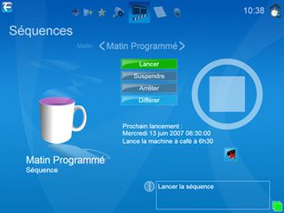
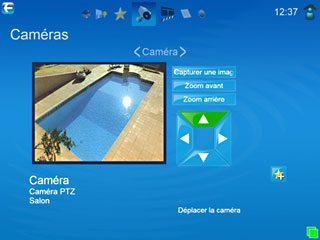
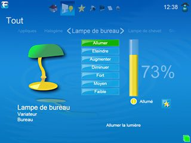
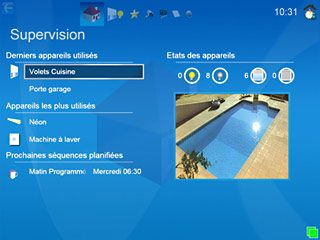

Domotique, here I come
This post was originally written in French.
Voilà c'est parti, je me lance officiellement dans la domotique. Première commande de débutant sur un site (belge) en plus ..
Merci pour votre commande! Recapitulatif de commande:
| 1 | x | ha003 | MyHappyHome Pack Domotique X10 à 4 pièces | 99,00 Euro |
| 1 | x | ih2020 | AM12 Module Appareil pour prise | 29,95 Euro |
| Sous-total: | 128,95 Euro | |||
| Frais d'envoi: | 0,00 Euro | |||
| TOTAL | 128,95 Euro |
En gros, mon premier challenge c'est de pouvoir commander un appareil, je ne sais pas encore quoi, mais probablement un petit chauffage électrique qui se trouve dans notre chambre au 2ème étage. Et tout ca depuis mon médiacenter avec la télécommande de la télé !
Donc, une fois que j'aurais reçu mon petit paquet cadeau, j'installerai soit :
mControl ou exdomus qui sont des softs qui tournent dans MCE2005 et qui peuvent piloter des devices utilisant le protocole X10 (quelle frime hein tout ces nouveaux termes ... pas de panique, y a 1 heure je savais même pas que ca existait)
Voici ce que ca donne avec exdomus :




Bon faudra aussi évidemment que j'achète une belle lampe verte, une piscine, et une tasse de café blanche, sinon je sens que je vais devoir tout configurer.
Comments 3
patrice.roulive, 2007-12-16 11:06
Va quand même falloir que j'explique que tu es poster invité sur le blog ;-)
J-F Declercq, 2007-12-17 05:33
(Blague misogyne à deux balles) C'est pas plus simple d'avoir une femme ?
patrice.roulive, 2007-12-17 08:11
:-)